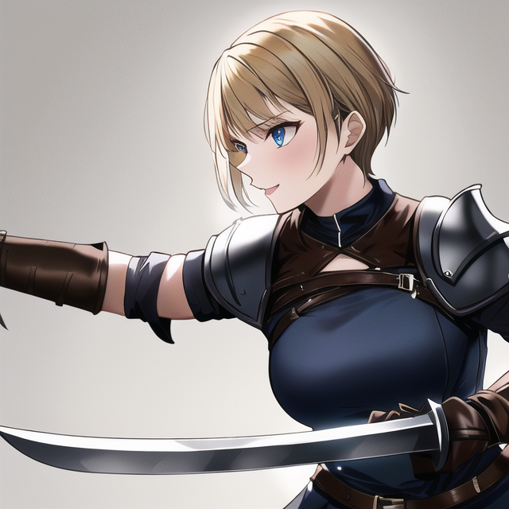

９８歳の孤独な老人・天野喜一郎は、ある夜自宅で映画を楽しみながらポップコーンを食べていた。しかし、突如ポップコーンが詰まり、喜一郎は息絶えてしまう。しかし彼の物語はここから始まりだった。 喜一郎は、若者として異世界・アルテリアに転生する。彼はこの世界で魔法や剣術を学ぶことができ、未来を切り開く冒険が待っていた。転生して得た特別な力「ポップコーンの加護」は、彼がピンチの時に助けとなる。 アルテリアでは邪悪な魔王が世界を支配しようと企んでおり、喜一郎はその野望を阻止すべく立ち上がる。彼は様々な仲間と出会い、冒険を繰り広げる。元の世界で得られなかった友情や愛情を満喫し、彼はこの世界で新たな人生を歩み始める。 しかし、喜一郎の持つ「ポップコーンの加護」の力が魔王の目に留まり、彼の命を狙われることになる。喜一郎は、自分が転生した理由や魔王の真の目的を知るうちに、運命の戦いに巻き込まれていく。 最後の戦いで魔王と対峙する喜一郎。彼は仲間とともに苦戦を強いられるが、「ポップコーンの加護」の力を最大限に発揮して、魔王を倒すことに成功する。喜一郎はアルテリアでの冒険を終え、平和な世界を取り戻す。彼は新たな人生を楽しみながら、かつての自分には考えられないような冒険を繰り広げるのだった。
「ポップコーンの加護」は、喜一郎が異世界アルテリアで転生した際に得た特別な力です。この力は以下のような特徴を持っています。 爆発的な力: 喜一郎は、ポップコーンが瞬時に膨張・爆発する性質を利用し、敵に対して強烈な一撃を与えることができます。この力は、彼の剣術や魔法と相まって、より強力な攻撃手段となります。 防御の盾: 喜一郎は、ポップコーンの軽さと弾力性を利用して、敵の攻撃を跳ね返す防御の盾を作り出すことができます。この盾は、彼の身を守るだけでなく、仲間にも保護を提供します。 瞬間的な回復: ポップコーンの栄養分を利用し、喜一郎は短時間で自分や仲間の体力を回復させることができます。この回復力は、長期的な冒険や戦闘で疲労が蓄積した際に、喜一郎たちの助けとなります。 驚くべきスピード: ポップコーンが急速に熱を受けて膨張する性質を利用して、喜一郎は瞬時に高速移動や瞬間移動を行うことができます。これにより、彼は敵を翻弄し、戦術的な優位を築くことができます。 「ポップコーンの加護」は、喜一郎にこれらの力を与え、彼の冒険をサポートします。彼は、この力を駆使してアルテリアでの数々の困難を乗り越え、最終的に邪悪な魔王との戦いに勝利することができます。
| 名前/顔 | 説明 |
|---|---|
主人公：天野 喜一郎 |
19歳
男性
元９８歳の孤独な老人
|
リーナ・シルバーウィンド |
20歳
女性
リーナは優れた魔法使いで、喜一郎が異世界アルテリアで最初に出会う仲間です。彼女は喜一郎のポップコーンの加護に興味を持ち、彼の冒険に同行することになります。
|
ガルド・アイアンフィスト |
32歳
男性
ガルドは熟練した戦士で、喜一郎たちのパーティに力と経験をもたらします。彼は仲間を守ることに命をかけており、喜一郎に対しても兄貴分のような存在となります。
|
ユーリ・スウィフトソング |
25歳
女性
ユーリは軽快な動きで戦う盗賊で、喜一郎たちのパーティに機敏さとスピードを提供します。また、彼女は異世界アルテリアの歴史や伝説に詳しく、物語の進行に役立つ情報を提供します。
|
エリオス・ライトブリンガー |
28歳
男性
エリオスは信仰心の強い聖騎士で、喜一郎たちのパーティに治癒魔法と強力な守護の力をもたらします。彼は喜一郎のリーダーシップを支持し、彼が魔王を倒すための助力を惜しまない。
|